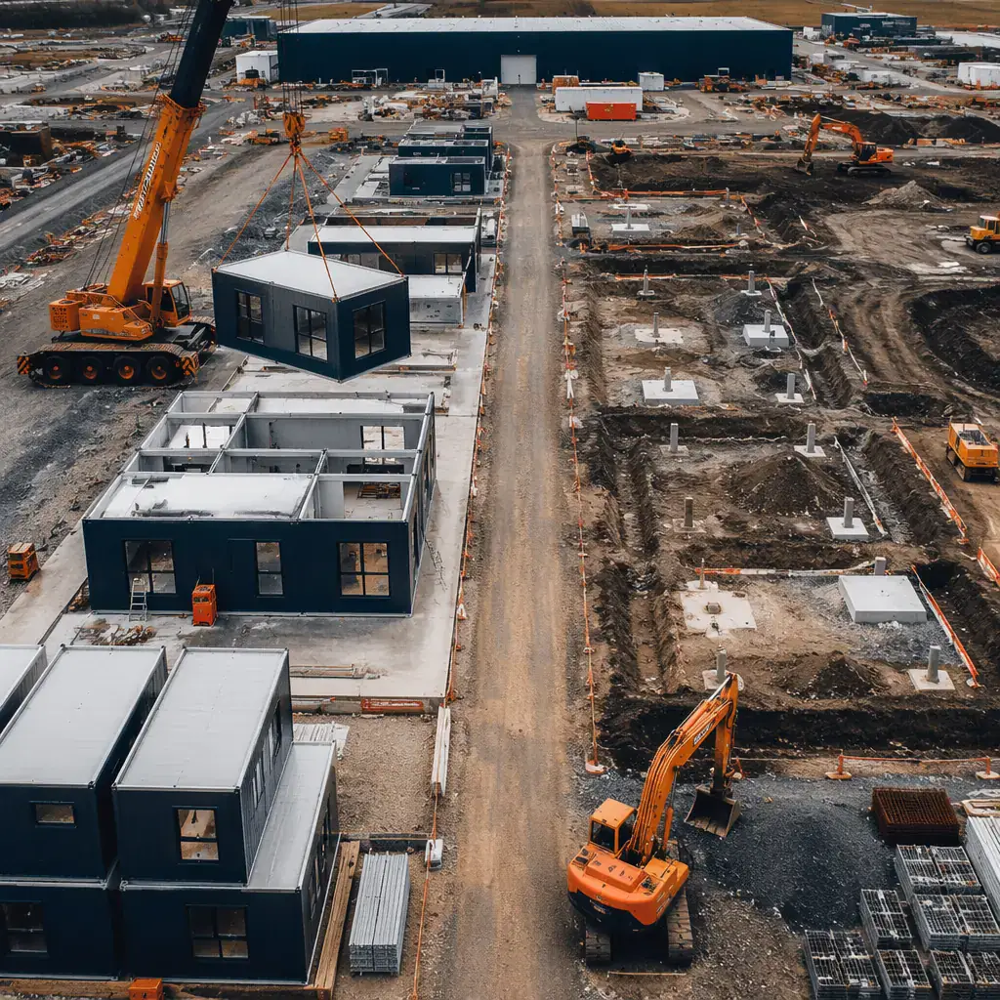

Every developer asks the same question when they first hear about modular construction: "What's the ROI?" Behind that question is a real financial decision — committing millions of dollars to a construction method that may be unfamiliar to lenders, investors, and project stakeholders. This guide breaks down exactly where modular construction delivers returns, using real project data from over 500 buildings across 18 countries.

The ROI Formula Modular Developers Use
Modular construction ROI isn't a single number — it's a compounding chain of five financial effects that stack together. Each effect alone is meaningful; combined, they transform project economics.
- Factory labor efficiency: Factory workers are 40% more productive than on-site crews. Repetition, precision tooling, and a climate-controlled environment eliminate the downtime that plagues construction sites — rain delays, material waits, and subcontractor no-shows.
- Financing period compression: A project that completes in 9 months instead of 18 months pays half the construction loan interest. On a $20 million development at 7% construction financing, that's $500,000–$800,000 in interest savings alone.
- Revenue acceleration: Opening 8–12 months earlier means 8–12 months of additional revenue. For a 150-key hotel at 70% occupancy and $180 ADR, that's approximately $2.3 million in revenue captured before a conventional build would even finish.
- Change order elimination: Traditional construction averages 15–20% in change orders — scope creep, unforeseen site conditions, subcontractor rework. Modular projects deliver within 5% of the original budget 92% of the time, because design is locked before production starts and factory conditions prevent surprises.
- Warranty and maintenance savings: Factory precision (±2mm tolerances vs ±25mm on-site) produces 60% fewer warranty claims in the first year. Post-occupancy data shows 73% fewer punch-list items than traditional projects.
Financing Period — The Hidden $500K–800K Saving
Construction loans are expensive — typically 200–300 basis points above prime, interest-only during the build phase. The longer the build, the more interest accrues before a single dollar of revenue comes in.
Consider a $20 million mid-rise apartment development:
- Traditional timeline: 18 months construction → ~$1.05M in interest (at 7% on average outstanding balance)
- Modular timeline: 9 months construction → ~$525K in interest
- Direct interest saving: $525,000
This saving isn't theoretical — it drops straight to the bottom line. For a complete walkthrough of how lenders and investors evaluate modular projects, read our modular construction financing guide. And it doesn't account for the developer's overhead during construction (project management, site security, insurance), which also scales with timeline.
On a recent 150-key hotel project in Texas, the developer saved 11 months compared to their original conventional timeline. That translated to roughly $2.3M in additional revenue from opening before peak season — and $620K in financing cost savings.
Revenue Acceleration — Opening 8–12 Months Earlier
For revenue-generating properties, the financial impact of earlier completion goes far beyond construction cost savings. Every month a hotel sits unfinished is a month of lost room revenue, unused F&B facilities, and deferred return on investment.
The revenue acceleration math varies by building type:
- Hotels: A 150-key property at 70% occupancy and $180 ADR generates ~$5.7M in annual room revenue. Opening 10 months earlier captures ~$4.75M in additional revenue — and ensures the property is operational before peak season.
- Apartments: A 100-unit building at $2,200/month average rent generates $220,000/month. Opening 8 months earlier = $1.76M in additional lease revenue. Critically, it also hits the market ahead of competing developments.
- Student Housing: The academic calendar is unforgiving — miss September move-in, wait a full year. Modular's compressed timeline is the only reliable way to guarantee hitting fall semester occupancy.
Cost Certainty — Why 92% of Modular Projects Hit Budget
In traditional construction, budget overruns are expected. The industry norm is 15–20% in change orders — scope changes, unforeseen conditions, material price escalation, and subcontractor rework. Developers budget for it, lenders price it into loan terms, and investors discount project returns to account for it.
Modular construction fundamentally changes this risk profile. When 80% of a building is produced in a factory, the variables that cause budget drift disappear:
- Weather: Factory production is weather-independent. No rain delays, no frozen ground, no heat shutdowns.
- Labor availability: Factory workforce is stable and specialized. No competing with other job sites for the same subcontractors.
- Material pricing: Bulk procurement for factory production locks in pricing before construction starts. On-site builders buy in smaller quantities and are exposed to spot-market price swings. Factory-built precision also enables superior energy efficiency that reduces operational costs over the building's lifetime.
- Quality rework: Factory quality control catches defects at the workstation, not during final walkthrough. Rework in a factory costs hours; on-site, it costs weeks.
The result: 92% of MODURA modular projects deliver within 5% of the original budget. For a $20 million project, that's the difference between a $1 million contingency buffer and a $3–4 million overrun risk.
Total Cost of Ownership — The 5-Year View
ROI calculations that stop at construction completion miss half the story. For a detailed breakdown by building type, see our modular construction cost per square foot analysis. Modular buildings continue delivering financial advantages through their operational life:
- Energy efficiency: Factory-built envelopes achieve 25% above energy code minimums. Tighter construction means lower HVAC loads and reduced utility bills — typically $15,000–$25,000/year savings for a 100-unit building.
- Maintenance costs: 60% fewer warranty claims in year one, compared to traditional projects. Factory precision means fewer callbacks for leaks, cracks, and finish defects.
- Acoustic performance: STC 55 rating exceeds IBC requirements by 5 points. For hotels and apartments, this means fewer noise complaints and higher tenant satisfaction — directly impacting occupancy and renewal rates.
- Future flexibility: Modular buildings are designed for disassembly. A module can be relocated, reconfigured, or replaced without demolishing the structure — an option traditional construction simply doesn't offer.
ROI by Building Type
Not all projects benefit equally from modular construction. Here's how ROI breaks down by the most common building types:
| Building Type | Timeline Savings | Cost Savings | Payback Period |
|---|---|---|---|
| Apartments (100+ units) | 8–10 months | 15–20% | Immediate (lease-up acceleration) |
| Hotels (100–200 keys) | 10–12 months | 12–18% | 6–8 months (revenue acceleration) |
| Office Buildings | 6–8 months | 10–15% | 12–18 months |
| Student Housing | 8–10 months | 15–22% | Immediate (academic year alignment) |
| Mixed-Use Developments | 8–12 months | 12–18% | Phased (retail opens first) |
The Developer's ROI Checklist
Before committing to modular — or to traditional — run through these eight questions:
- Does the project have repeating unit types? (Yes → modular advantage)
- Is speed-to-market critical for financing or revenue? (Yes → modular advantage)
- Is the construction site in a dense urban area with limited staging space? (Yes → modular advantage)
- Can the site access accommodate truck delivery of modules? (No → evaluate further)
- Is budget certainty a priority for lenders or investors? (Yes → modular advantage)
- Does the project need to hit a specific occupancy date (academic year, tourist season)? (Yes → modular advantage)
- Are local building codes friendly to modular construction? (Need to verify — increasingly yes globally)
- Is the design highly custom with non-repeating geometry? (Yes → traditional may be better)
The question for developers in 2026 isn't whether modular construction is viable. The data from 500+ projects across 18 countries has answered that. The question is whether the financial case for your specific project makes modular the obvious choice — and for most multi-unit residential, hospitality, and commercial developments, the ROI math points clearly in one direction.
Want a detailed ROI projection for your project? Contact our team for a free feasibility assessment with timeline estimates, cost comparison, and revenue acceleration modeling specific to your development.